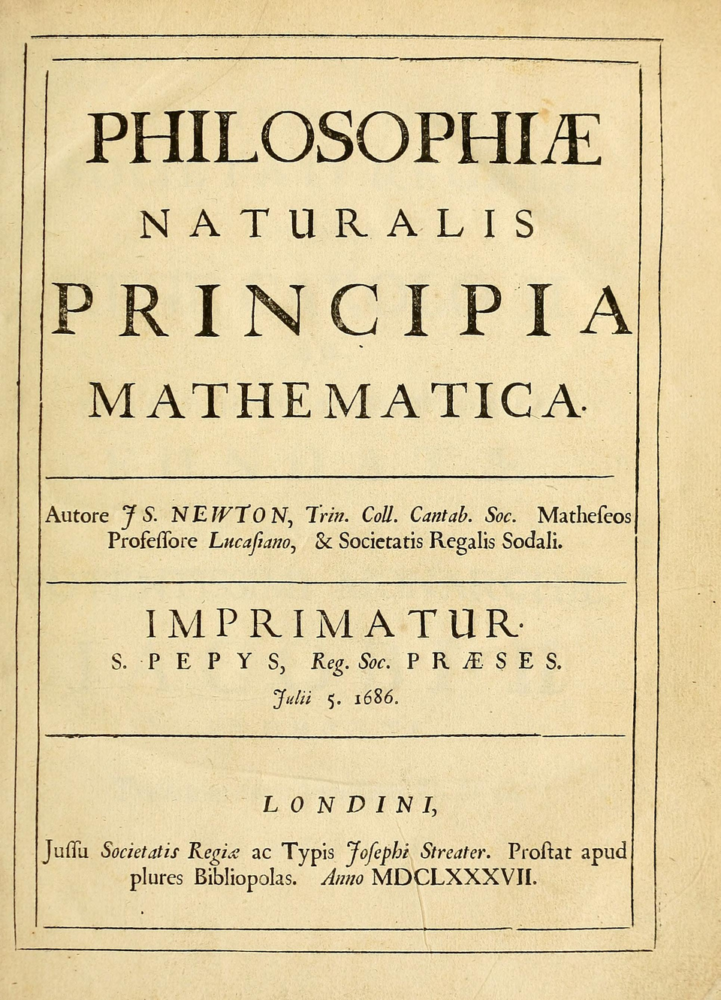

Un profesor de Cambridge publica las leyes que gobiernan por igual la piedra que cae y la Luna que gira
Salió de las prensas de Londres la obra del señor Isaac Newton, «Principios matemáticos de la filosofía natural», donde con pura geometría se demuestra que una única fuerza, la gravitación, rige la caída de los cuerpos, el flujo de las mareas y la danza entera de los planetas.

La Real Sociedad autorizó y el señor Edmond Halley pagó de su bolsillo —pues la docta corporación gastó su presupuesto en una historia de los peces que nadie compró— la impresión de un libro del que los entendidos hablan como no se hablaba desde Copérnico. Su autor, el señor Isaac Newton, profesor lucasiano de matemáticas en Cambridge, hombre huraño que come poco y duerme menos, demuestra en tres libros de geometría cerrada que los planetas describen sus elipses alrededor del Sol obedeciendo a una fuerza que decrece con el cuadrado de la distancia, la misma exactamente que hace caer una manzana en un huerto de Lincolnshire.
Piénsese lo que se afirma: que no hay dos físicas, una para los cielos incorruptibles y otra para este bajo mundo, sino una sola ley escrita en lengua matemática, válida para la piedra del hondero, para las mareas que obedecen a la Luna y para el cometa que el propio Halley estudia y que, según estas cuentas, debería volver a visitarnos a plazo fijo, como un acreedor. Todo el edificio se levanta sobre tres leyes del movimiento tan sencillas que caben en una tarjeta, y de las que se sigue, con rigor de teorema, la arquitectura del sistema del mundo.
El libro nació de una visita y de una apuesta de café: disputando en Londres los señores Halley, Wren y Hooke qué curva seguiría un planeta atraído por una fuerza que mengua con el cuadrado de la distancia, Halley llevó la pregunta a Cambridge hace tres años. «Una elipse», respondió Newton sin levantar la vista: lo había calculado tiempo atrás y extraviado el papel. De aquel papel perdido salieron dieciocho meses de trabajo furioso que son este libro. La semilla era más vieja aún: cuando la peste cerró la universidad en el 65, el estudiante Newton pasó dos años en la granja materna de Woolsthorpe, y de ese encierro de provincia salieron, confiesa a sus íntimos, el nuevo cálculo, la teoría de los colores y la primera cuenta de la gravedad, hecha —la historia es suya— mirando caer una manzana.
Del autor se cuentan rarezas que en otro serían defectos y en él parecen el precio del don: olvida comer si el problema aprieta, ha dictado lecciones a un aula vacía sin advertirlo, y guarda bajo llave cuadernos de teología y de alquimia que ocupan más papel que toda su matemática. El señor Hooke reclama a voces la paternidad de la idea del cuadrado inverso, y Newton, rencoroso fino, respondió podando su nombre de las páginas; la disputa promete sobrevivir a ambos. El tiraje es corto y carísimo, y sin embargo ya viajan ejemplares a Francia y a Holanda: los sabios del continente, que juran por los torbellinos de Descartes, van a necesitar sentarse.
El volumen está en latín apretado y son contados los hombres de Europa capaces de seguir sus demostraciones; el señor Newton, a quien las disputas fatigan más que los cálculos, tampoco hizo nada por facilitarlo. No importa: los que lo han leído aseguran que después de este libro el universo ya no es un misterio a contemplar sino un mecanismo a calcular, y que la razón humana acaba de ganar su batalla más alta. De ser así, la fecha de hoy vale por una coronación. Los siglos venideros, que navegarán y edificarán y quién sabe si volarán con estas tres leyes en el bolsillo, sabrán ser más elocuentes que este cronista.